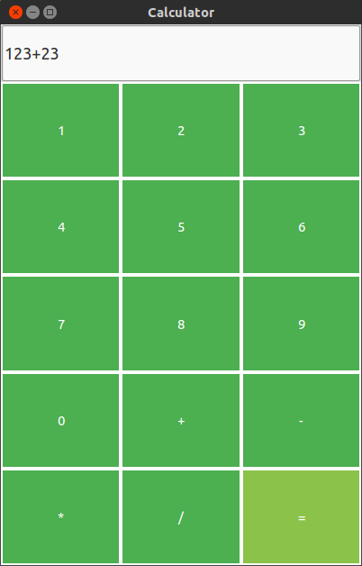

Advanced
QML features a deep JavaScript integration which allows you too write full-suited applications using only JavaScript for the logic. But sometimes you may want a more powerful backend. As QML is a part of Qt you can easily extensible it through C++ code. You don't like C++? No problem, there are several third-party libraries which provide bindings for e.g. Python or Go.
Integrate with C++
// TODO
Integrate with PyOtherSide
PyOtherSide is a QML Plugin that provides access to a Python 3 interpreter from QML.
Installation
PyOtherSide is available for many platforms. There are pre-built packages available for the following platforms:
Arch Linux
Arch users can install PyOtherSide from the AUR: https://aur.archlinux.org/packages/pyotherside/
Nemo Mobile
Go here for more information.
Debian and Ubuntu
Debian and Ubuntu users can install it using the following command:
$ sudo apt-get install pyotherside
Building
If there are no builds available for your platform, don't worry, you can still build PyOtherSide yourself. Go here for complete build instructions.
Hello PyOtherSide!
Okay, now as we have PyOtherSide installed, let's start with a simple example. We start with this simple "Hello World" application that should be familiar to you:
// main.qml @import QtQuick 2.0 @import QtQuick.Controls 1.2 #ApplicationWindow { id: app width: 200 height: 100 title: "Hello PyOtherSide" #Text { id: myHelloWorldText text: "Hello" } }
In order to use PyOtherSide we first need to import the module, so add the following statement:
@import io.thp.pyotherside 1.4
Now you can run the file using qmlscene to make sure PyOtherSide is installed properly.
If not you will get an import error.
Allright, nothing overwhelming, yet. Let's go ahead and create a new file called hello.py
def world(): print("Hello from Python!")
Now we add a new Python Component which provides access to the Python interpreter.
// main.qml #ApplicationWindow { // ... Python { id: py Component.onCompleted: { addImportPath(Qt.resolvedUrl(".")) importModule("hello", function(){ call("hello.world") }); } } }
We also create a new Component.onCompleted JavaScript handler which will be called when the component is ready.
Now we need to add our current working directory to the Python import path ( sys.path). /p>
addImportPath(Qt.resolvedUrl("."))
Importing a Python module is as simple as calling the Python Component's importModule function. As the second parameter we pass a function which will be called when the import is done. Finally we execute our Python function using call.
That's it! Run the sample using qmlscene and you should see the console output as expected:

Synchronous vs. Asynchronous
// TODO:
* async/sync
* events and handlers
* Deployment: Android
* Deployment: Ubuntu Touch
A Python Calculator
Now we want to face a bit more complete application to show you how a real project Python-QML hybrid project could be structured.
Writing the GUI in QML
We start by creating the user interface in QML. To do so, create a new file called main.qml. First, we import the modules we need:
// main.qml @import QtQuick 2.4 @import QtQuick.Controls 1.3 @import io.thp.pyotherside 1.4
Now let's create our ApplicationWindow. We choose a handy window size and set the title.
#ApplicationWindow { title: "Calculator" width: 400 height: 600 visible: true
We add a TextField to our window. The property calc refers to it's text just to simplify setting and getting the current formula string.
property alias calc: textField.text #TextField { id: textField
For the text field we define a new property hasError. By setting it to true the font will automatically change to italic.
property bool hasError: false font.italic: hasError
We anchor it to the left, right and top and set the height as we are going to anchor the calculation buttons to the bottom of it.
anchors { top: parent.top left: parent.left right: parent.right } height: 64 font.pixelSize: 18 } }
Okay, good so far. Now let's create our calculator buttons. To do so, we'll create a custom component called CalculatorButton:
// CalculatorButton.qml @import QtQuick 2.0 @import QtQuick.Controls 1.3 #Rectangle { property alias text: label.text signal clicked color: "green" border.width: 2 border.color: "white" #Label { id: label anchors.centerIn: parent color: "white" } #MouseArea { id: mouseArea anchors.fill: parent onClicked: parent.clicked() } }
This should be pretty straightforward. We basically have a green rectangle with a signal clicked that is called by the MouseArea.
Now we want to add some of these Buttons to our ApplicationWindow. Of course we could do this all manual but this would lead to a mess. So what are we going to do? First of all we need to choose the right layout. We want to create a classic calculator app with a grid of buttons like this:
| 1 | 2 | 3 |
| 4 | 5 | 6 |
| 7 | 8 | 9 |
| 0 | + | - |
| * | / | = |
Luckiliy, QML provides two standard Components which are very handy in our use case. The first of them is Grid. As the name suggests, it simply orders its child elements in a Grid and we can specify the amount of columns and rows easily by setting the respecting properties. The second is the Repeater which simply repeats the Component specified as delegate (in our case the CalculatorButton). The property model allows to set custom data for each Button (as we need to set the numbers/calculation operators).
#ApplicationWindow { // ... #Grid { anchors { top: textField.bottom // Anchor to the textField left: parent.left right: parent.right bottom: parent.bottom } columns: 3 rows: 5 #Repeater { model: [1, 2, 3, 4, 5, 6, 7, 8, 9, 0, "+", "-", "*", "/"] delegate: #CalculatorButton { // modelData holds the current text text: modelData.toString () // We add the operator or number to the calc string onClicked: calc += modelData.toString() height: parent.height / parent.rows width: parent.width / parent.columns } }
For the evaluate ("=") button we create an extra object, it will be not handeled by the Repeater. We connect onClicked to a function called calculate which we yet need to create.
#CalculatorButton { text: "=" onClicked: calculate() color: "black" height: parent.height / parent.rows width: parent.width / parent.columns } } }
Great! The user interace part is finished so far. Run the project using qmlscene to see if everything works correctly.

Doing the calculations
Now let's add the logic part. As we want to handle that via Python, create a new file called main.py:
from math import * def calculate(expression): try: return (True, eval(expression, globals())) except: return (False, 0)
We basically just want to evaluate a string. Python lets us doing this easily using the eval function.
By importing everything from the math we have the most important arithmetic functions like sin
or pi in the global namespace. To make use of that we just need to hand them over to eval using
global().
Our function calculate returns a Python tuple (which is basically an array) with to values.
The first one describes whether the expression is valid, the second holds the evaluation result. If eval fails it
throws an exception which is handeled by except. In this case we return False and 0 as values
to point out that there was a problem.
Cool! Now we just need to integrate this into QML. To the bottom of our main.qml but inside of the ApplicationWindow (!) we add the following code:
Python { id: py Component.onCompleted: { addImportPath(Qt.resolvedUrl(".")) importModule_sync("main") } }
Nothing new here, check the previous PyOtherSide tutorials if this doesn't look familiar to you.
The only thing that's missing now is the calculate function we already referenced in the code. We add it below the properties of our
ApplicationWindow:
function calculate () { py.call("main.calculate", [ calc ], function ( result ) { var isValid = result[0]; if (isValid) { calc = result[1]; } }) }
Here we call the imported Python function main.calculate with the parameter calc which is our formula string. As second paramter we hand over a callback function which expects a list with two entries. If the first index is true, the evaluation has passed with no errors and we set calc to the result.
To calculate on pressing return just add this line to our textField:
onAccepted: calculate()
That's it! Congratulations, you wrote your own calculator in QML and Python!
QML-Material
Are you bored by the visual expierence of our examples so far? Good news then, this section is for you!
You have probably heard of Googles Material Design, the shiny design of current Android versions and apps. If not, here's a small video:
The team around the upcoming linux os Papyros created an amazing QML framework called "QML-Material",
which enables us - as the name suggests - to write cross-platform Material designed QML applications.
Installation
// TODO
Hello World
// TODO
Documentation
// TODO